Darbo drabužiai ir įranga Naudotojo vadovas
Programa registruoja darbuotojams išduotus darbo drabužius ir apsaugos priemones. Paruošiate užsakymą ir pažymite jį kaip užsakytą. Gavęs prekes, darbuotojas patvirtina gavimą, o programa išsaugo užrakintą įrašą anglų ir rusų kalbomis. Ji taip pat registruoja įmonės SIM korteles, įrangą ir baldus bei tai, pas ką yra kiekvienas daiktas.
1Prisijungimas
- Atidarykite workwear.gavort.nl ir prisijunkite savo el. paštu ir slaptažodžiu.
- Pirmasis ekranas priklauso nuo jūsų rolės:
- administratoriai pradeda ekrane Suvestinė;
- vadovai – ekrane Vadovo suvestinė;
- darbuotojo rolė – ekrane Darbuotojo suvestinė.
Šoninėje juostoje yra visi skyriai ir Ieškoti… (⌘K). Pagalba, Spartieji klavišai, jūsų paskyra ir Atsijungti yra jos apačioje.
Pažymėjus Likti prisijungus, šiame įrenginyje liekate prisijungę ir uždarę programėlę ar perkrovę įrenginį – iki 30 dienų arba kol jo nenaudojate 14 dienų. Bendrame kompiuteryje varnelę nuimkite: būsite atjungti uždarius naršyklę ir ne vėliau kaip po 12 valandų.
Atsijungti užbaigia prisijungimą šiame įrenginyje. Pakeitus slaptažodį, kiti jūsų įrenginiai atjungiami. Jei administratorius atkuria jūsų slaptažodį ar išjungia paskyrą, esate atjungiami visur.
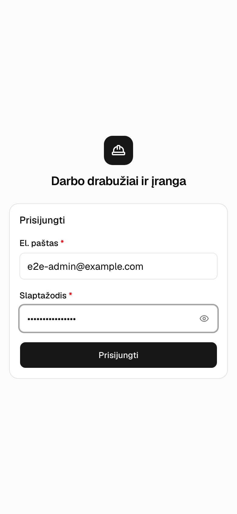
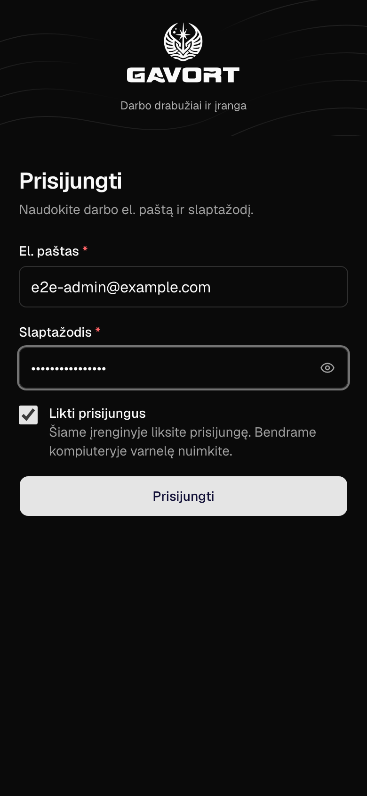
2Suvestinė
Tik administratoriams
Viršuje rodomi patvirtinimo laukiantys užsakymai, šio mėnesio išlaidos ir artėjantys pakeitimai.
Reikia jūsų dėmesio rodo, ką daryti toliau, pradedant skubiausiais darbais. Kiekvienoje eilutėje yra jos užduoties mygtukas:
- pavėluota prekė – Užsakyti vėl;
- nepatvirtintas užsakymas – Siųsti nuorodą;
- trūkstamas dydis – Pridėti dydžius;
- prekė be kainos – Taisyti.
Kortelė Atsarginės kopijos rodo, ar duomenų bazė kopijuojama. Pasirinkite ją, kad Administravime atidarytumėte Atsarginės kopijos.
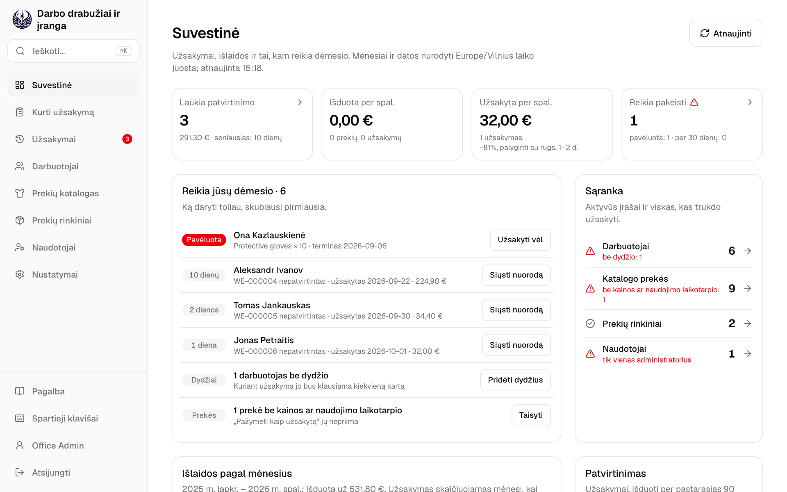
Tik vadovams
Vadovo suvestinė skirta prekėms, kainoms ir pirkimams: kas užsakyta, išlaidos pagal prekes, kokius pakeitimus teks pirkti, naujausi kainų pokyčiai, kas kataloge ir rinkiniuose trukdo užsakyti, ir kokių dydžių laikyti atsargų.
Tik darbuotojo rolei
Darbuotojo suvestinė prasideda nuo to, ką reikia padaryti: jūsų užsakymai, dar laukiantys darbuotojo patvirtinimo (Siųsti nuorodą), keistinos prekės ir darbuotojai, kuriems trūksta dydžio. Žemiau – jūsų užsakymai pagal mėnesius ir neseniai išduoti.
3Užsakymo kūrimas
- Skyriuje Užsakymai viršuje pasirinkite Kurti užsakymą.
- Lauke Kam skirta įveskite darbuotojo vardo dalį. Naujam darbuotojui pasirinkite + Naujas darbuotojas.
- Pridėkite prekes:
- Prekių rinkinys vienu paspaudimu prideda visą komplektą.
- Pridėti prekę prideda vieną prekę. Paspaudę /, pereisite į šį lauką.
- Patikrinkite kiekvienos eilutės dydį ir kiekį:
- Dydžiai imami iš darbuotojo išsaugotų dydžių. Drabužių dydis renkamas raide, pvz., S (44–46).
- Kol nepasirinkti visi trūkstami dydžiai, užsakyti negalima.
- Jei pasirinksite kitą dydį nei išsaugotas darbuotojo, programa paklaus Pasirinktas kitas dydis. Išsaugoti jį darbuotojo profilyje? Išsaugoti – dydis bus naudojamas ir būsimiems užsakymams; Praleisti dydžio atnaujinimą – tik šiam užsakymui.
- Dešinėje esančiame skydelyje pasirinkite Peržiūrėti ir pažymėti kaip užsakytą arba paspauskite ⌘/Ctrl Enter.
Kol dirbate, šis įrenginys saugo užsakymo juodraštį. Kopijuoti į WhatsApp (žinutė tiekėjui) yra peržiūroje.
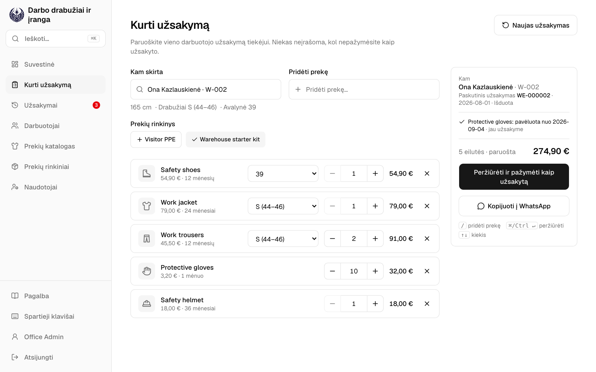
4Peržiūra ir „Pažymėti kaip užsakytą“
- Patikrinkite eilutes ir bendrą sumą.
- Pasirinkite Pažymėti kaip užsakytą. Užsakymo būsena tampa Užsakyta, ir jo nebegalima keisti. Programa kartu sukuria darbuotojo patvirtinimo nuorodą.
- Nusiųskite darbuotojui nuorodą: Siųsti nuorodą per WhatsApp arba Kopijuoti nuorodą. Nuoroda galioja 7 dienas ir rodoma tik vieną kartą.
Jei darbuotojas pasirašys popieriuje, vietoj to pasirinkite Spausdinti įrašą.
Kopijuoti į WhatsApp peržiūroje nukopijuoja žinutę tiekėjui. Kai administratorius Administravime, ekrane Nustatymai, yra nurodęs tiekėjo WhatsApp grupę, programa pasiūlo ją atidaryti: įklijuokite žinutę ten.
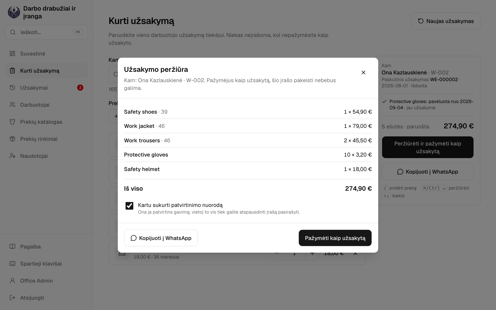
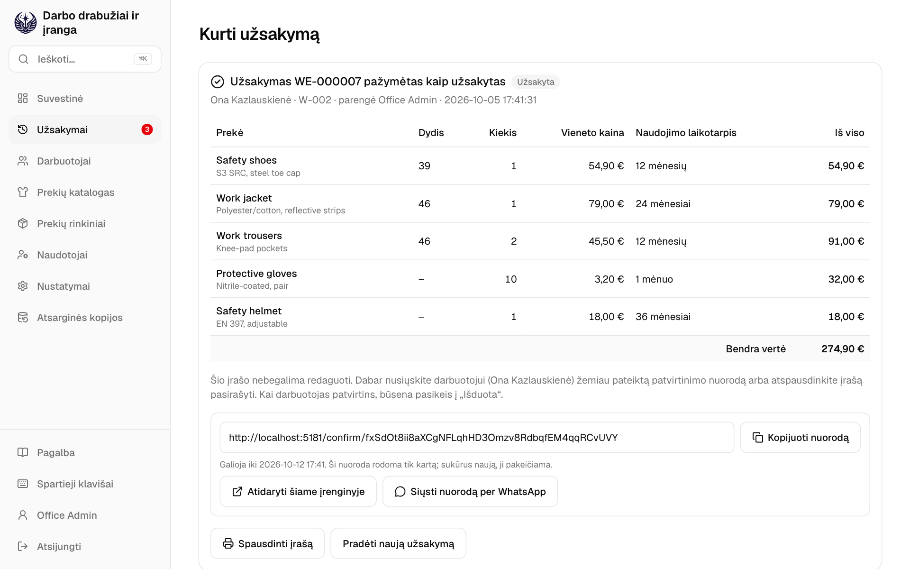
5Darbuotojas patvirtina
- Darbuotojas atidaro nuorodą. Paskyros jam nereikia.
- Jis peržiūri prekes, jų kainas ir bendrą sumą anglų arba rusų kalba (EN / RU). Puslapis atsidaro darbuotojo pageidaujama kalba, jei tai anglų ar rusų; lietuviškai jis nerodomas.
- Jis pažymi sutikimą ir paspaudžia Confirm receipt (Подтвердить получение). Užsakymo būsena tampa Išduota.
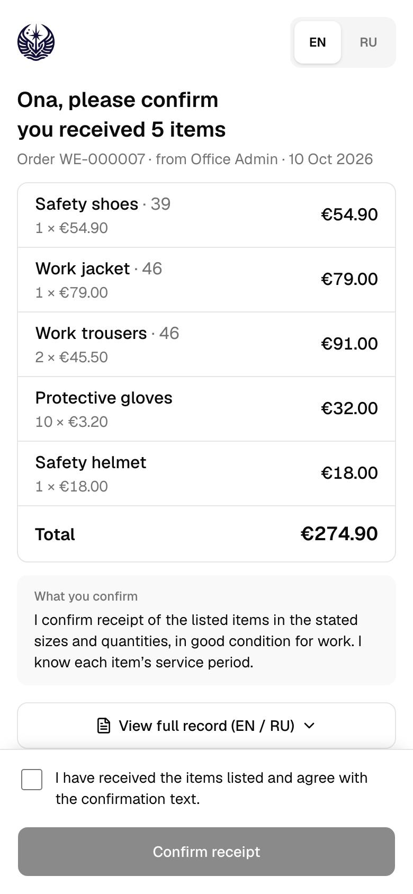
6Užsakymai
Užsakymuose – visi pateikti užsakymai. Kurti užsakymą viršuje pradeda naują.
Laukia, Išduota ir Visi filtruoja užsakymus pagal būseną. Taip pat galima filtruoti pagal darbuotoją ir datą. Spustelėjus įrašo numerį, užsakymas atsidaro šalia sąrašo. J ir K pereina tarp užsakymų, o Esc užsakymą uždaro.
Užsakymas, kurio būsena Užsakyta, turi šiuos veiksmus:
- Atidaryti darbuotojo patvirtinimą sukuria naują nuorodą. Ten pat galima pažymėti pasirašytą popierinį egzempliorių (Pažymėti pasirašytą popierinį patvirtinimą).
- Išduoti dabar perduoda šį įrenginį darbuotojui, ir jis patvirtina gavimą vietoje.
- Spausdinti įrašą atspausdina įrašą pasirašyti.
Tik vadovams
⋯ → Ištrinti užsakymą… pašalina užsakymą, pvz., bandomąjį. Prieš tai programa paklausia.
Užsakymo Pakeitimai rodo, kas jam nutiko ir kas tai padarė: užsakyta, sukurta ar atidaryta nuoroda, išduota.
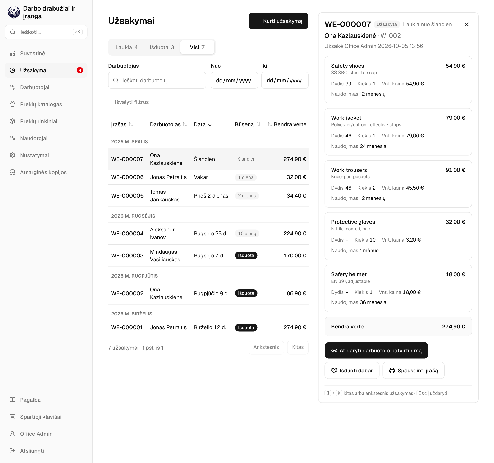
7Išdavimo įrašas
Užsakymas, kurio būsena Išduota, turi užrakintą įrašą anglų ir rusų kalbomis (Items Given Record / Акт выдачи). Atidarykite jį mygtuku Peržiūrėti įrašą.
- Spausdinti įrašą atspausdina jį viename A4 lape.
- Siųsti per WhatsApp jį išsiunčia.
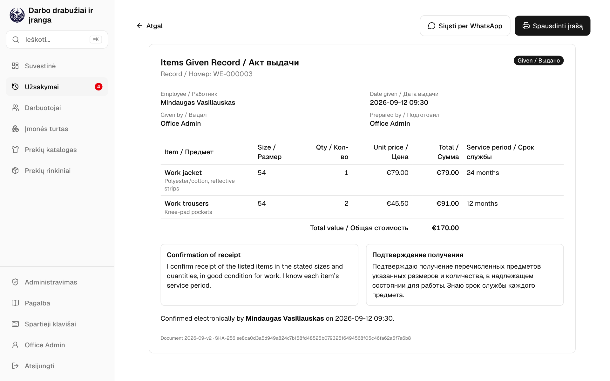
8Darbuotojai
Sąraše matyti kiekvieno darbuotojo dydžiai ir pastabos. Darbuotojai, kuriems trūksta dydžio, pažymėti. Ilga pastaba sutrumpinama iki vienos eilutės; visą ją matysite užvedę žymeklį arba atidarę darbuotoją.
Darbuotojo puslapyje rodoma:
- jo dydžiai ir pageidaujama kalba;
- visos išduotos prekės su naudojimo trukme ir pakeitimo data;
- dar neišduoti užsakymai;
- įmonės turtas, kurį jis turi ir turėjo: Išduotos SIM ir Įranga;
- Pakeitimai: kas ir kada keitė jo duomenis ar dydžius.
Šiame puslapyje Naujas užsakymas pradeda užsakymą šiam darbuotojui, o Keisti dydžius pakeičia jo dydžius.
Tik administratoriams ir vadovams
Darbuotojo, kuris dar turi įmonės turto, ištrinti negalima: išėjus iš darbo, niekas negrąžinama savaime. Pirmiausia užregistruokite grąžinimą.
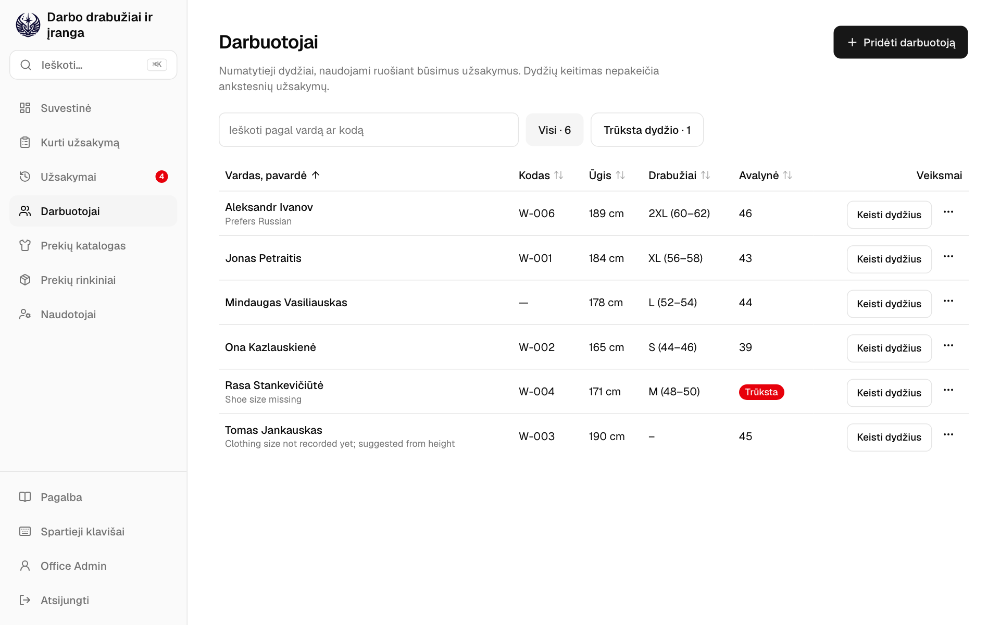
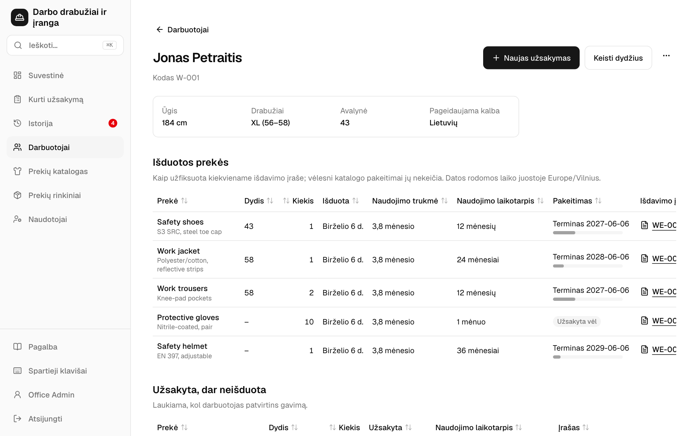
9Prekių katalogas ir prekių rinkiniai
Kiekviena katalogo prekė turi kainą, naudojimo laikotarpį ir dydžių grupę. Užsakymuose rodoma ir sumuojama ši kaina. Prekės be kainos ar naudojimo laikotarpio užsakyti negalima. Pakeitus kainą, esami užsakymai nesikeičia.
Prekė gali turėti ir Pirkimo kainą – kiek mokame tiekėjui. Ji neprivaloma, užsakyti jos nereikia, o užsakymuose ji nerodoma. Prekės puslapyje matyti abi kainos ir kaip jos keitėsi, o jos Pakeitimai rodo, kas ir kada keitė prekę.
Prekių rinkinys – tai prekių komplektas su numatytais kiekiais. Ekrane „Kurti užsakymą“ jį pritaikote vienu paspaudimu.
Tik administratoriams ir vadovams
Prekes kuriate ir keičiate ekrane Prekių katalogas, o komplektus – ekrane Prekių rinkiniai.
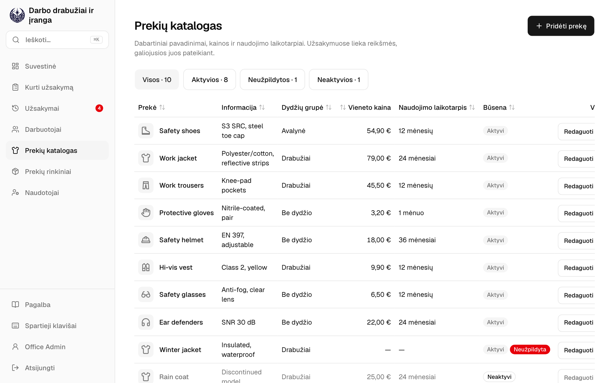
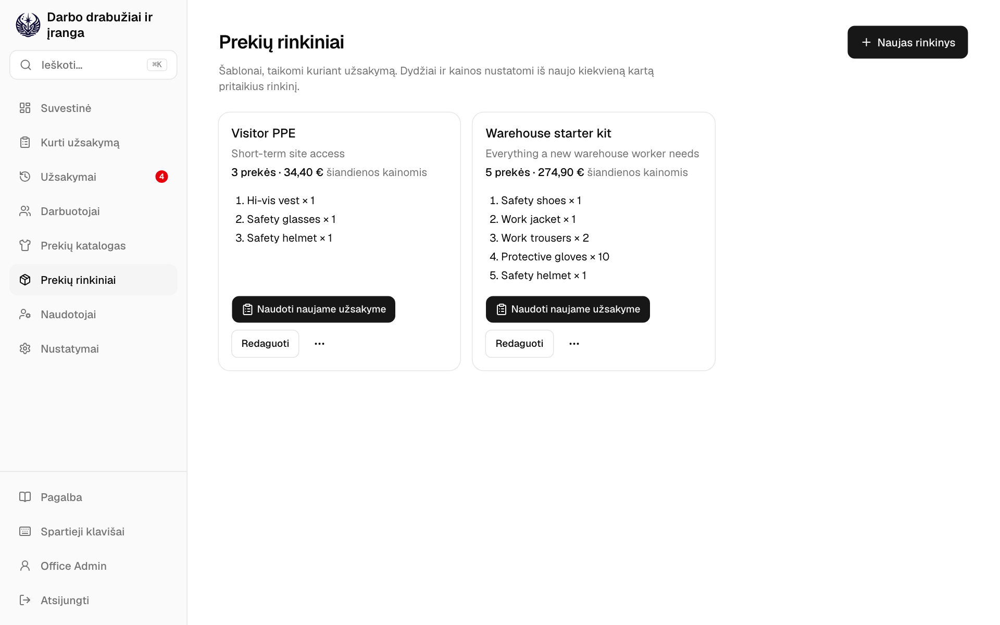
10Įmonės turtas
Skyriuje Įmonės turtas registruojamos darbuotojams išduodamos įmonės SIM kortelės, įranga ir baldai: kur kiekvienas daiktas yra, pas ką jis ir koks aktas pasirašytas jį išduodant. Jame yra du skirtukai: SIM kortelės ir Įranga ir baldai. Kiekvienas daiktas – atskiras įrašas su savo inventoriaus numeriu, todėl trys vienodi nešiojamieji kompiuteriai yra trys turto vienetai.
Jį atidarysite šoninėje juostoje arba paspaudę G, tada A.
Tik administratoriams ir vadovams
Kortelėje Įmonės turtas suvestinėje rodomi tie patys skaičiai. Pasirinkite vieną, kad atidarytumėte sąrašą pagal jį.
Plytelės viršuje skaičiuoja, kas yra Biure, Pas darbuotojus ir Negrąžinta. Pasirinkite plytelę, kad matytumėte tik juos; skaičiai persidengia, nes negrąžinta kortelė vis dar yra pas darbuotoją. Ieškokite pagal numerį ar darbuotoją, filtruokite pagal būseną, vietą ir tiekėją, o įrangą – pagal kategoriją.
SIM kortelės Būsena – tai, ką patvirtina tiekėjas: Neaktyvuota, Aktyvi arba Užblokuota. Ji nepriklauso nuo to, kur kortelė yra ir pas ką ji: užblokuota kortelė negrąžinama, o grąžinus kortelę jos būsena nesikeičia.
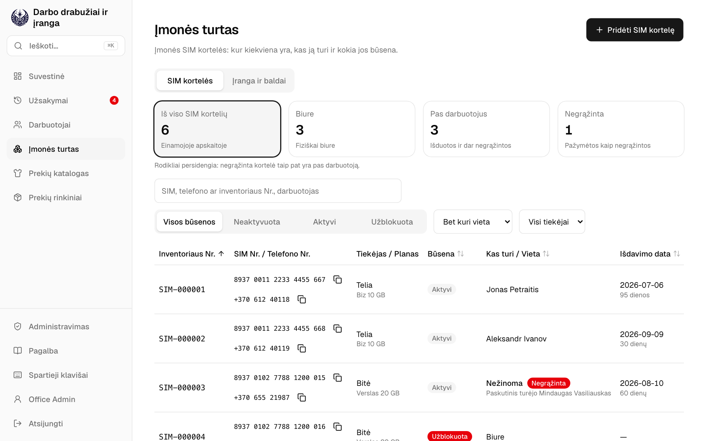
Tik administratoriams ir vadovams
Pridėti SIM kortelę užregistruoja kortelę, kai ją atsiunčia tiekėjas. Jos SIM Nr., tiekėjas ir inventoriaus numeris (pasiūlomas kitas) reikalingi iš karto; telefono numeris, planas ir negrąžinimo vertė gali palaukti, kol kortelė bus išduodama. Skirtuke Įranga ir baldai mygtukas Pridėti turtą užregistruoja vieną daiktą: jo pavadinimą ir kategoriją, pagal kurią pasiūlomas numeris, pavyzdžiui, PC-000003.
Keisti būseną įrašo tiekėjo patvirtintą būseną. Kortelės ji neaktyvuoja ir neužblokuoja: dėl to rašykite tiekėjui.
Kaip išduoti SIM kortelę ar daiktą:
- Atidarykite jį ir pasirinkite Išduoti SIM kortelę arba Išduoti turtą. Darbuotojo puslapyje tas pats mygtukas skiltyje Išduotos SIM arba Įranga pradeda nuo darbuotojo ir parodo, kas yra biure.
- Pasirinkite darbuotoją ir išdavimo datą: šiandien arba anksčiau.
- Spausdinti aktą atidaro išdavimo aktą naujame skirtuke. Išspausdinkite jį ir duokite darbuotojui pasirašyti.
- Pažymėkite Aktas pasirašytas, tada pasirinkite Išduoti SIM kortelę arba Išduoti turtą.
Išduoti galima tik Aktyvią kortelę, esančią biure ir turinčią telefono numerį; kol to nėra, mygtukas nurodo, ko trūksta. Jei po spausdinimo aktas pasikeičia, žymė Aktas pasirašytas nuimama: išspausdinkite jį dar kartą. Baldai ir kiti daiktai išduodami be akto.
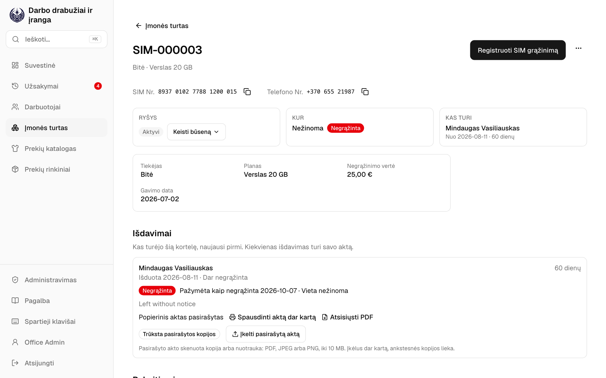
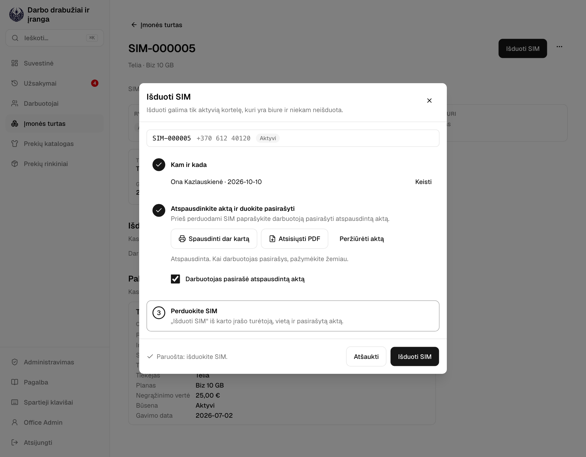
Tik darbuotojo rolei
Išdavimo su aktu kortelės puslapyje rašoma Pasirašyta kopija įkelta, su skenuota kopija atsisiųsti, arba Trūksta pasirašytos kopijos. Filtras Dokumentai randa trūkstamas.
Tik administratoriams ir vadovams
Kai darbuotojas pasirašo, nuskenuokite arba nufotografuokite aktą ir po jo išdavimu pasirinkite Įkelti pasirašytą aktą: PDF, JPEG arba PNG failą iki 10 MB. Iš nuotraukos pašalinama fotografavimo vieta ir fotoaparato duomenys. Įkėlus dar kartą, ankstesnės kopijos lieka po naujausia.
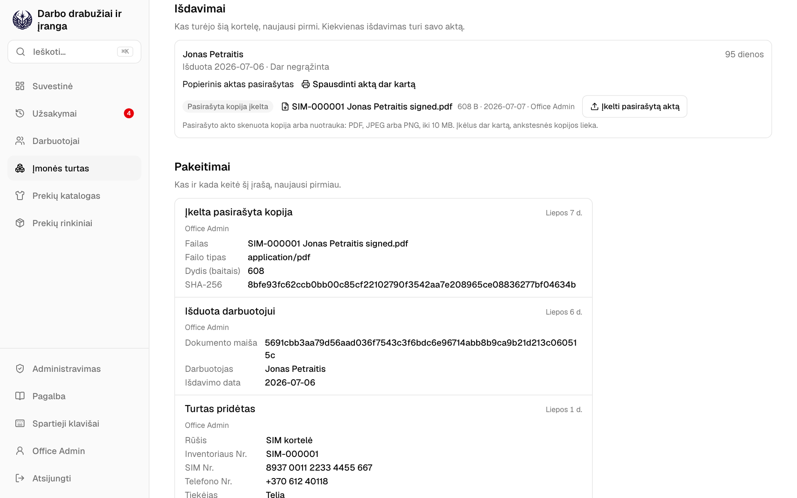
Tik administratoriams ir vadovams
Kai daiktas fiziškai grįžta į biurą, Registruoti SIM grąžinimą arba Registruoti turto grąžinimą jį ten įrašo. Kiekvienas išdavimas ir grąžinimas lieka jo puslapyje skiltyje Išdavimai, o Spausdinti aktą dar kartą išspausdina jo aktą.
Išėjus iš darbo, niekas negrąžinama savaime. Kai darbuotojas negrąžina kortelės, Pažymėti kaip negrąžintą įrašo, kur ji yra: vis dar pas jį ar nežinoma. Kortelė lieka jo, kol grįš. Tada Paruošti blokavimo laišką pateikia tekstą, kurį nukopijuosite į savo laišką tiekėjui; kai jis patvirtins, ekrane Keisti būseną pasirinkite Užblokuota.
Paieška randa SIM kortelę pagal SIM, telefono ar inventoriaus numerį, o daiktą – pagal inventoriaus numerį.
11Administravimas
Tik administratoriams
Administravime tvarkote, kas gali naudotis programėle ir ką gali daryti, prižiūrite, kaip ji veikia, ir tvarkote organizacijos nustatymus. Jis atsidaro Apžvalgoje. Kiti jo ekranai: Naudotojai, Rolės ir teisės, Audito žurnalas, Sauga, Sistema, Naudojimas ir Nustatymai.
Atidarykite jį mygtuku Administravimas šoninės juostos apačioje. Jis turi savo šoninę juostą; Darbo drabužiai ir įranga jos apačioje grąžina atgal.
Prisijungiate prie abiejų iš karto, o Atsijungti bet kuriame atjungia nuo abiejų. Administravimą mato visi, kurių rolės leidžia tvarkyti naudotojus, roles ar nustatymus arba skaityti audito žurnalą, saugą, sistemą, naudojimą ar atsargines kopijas, su tik tais ekranais, kuriuos atveria jų rolės.
12Apžvalga
Tik administratoriams
Apžvalga atsako į klausimą: ar kas nors negerai? Reikia dėmesio išvardija, į ką pažiūrėti, svarbiausia pirmiau, su nuoroda, kur tai sutvarkyti. Kai viskas gerai, rodoma Niekam nereikia jūsų dėmesio.
- Atsarginė kopija nepavyko arba kopijos nebedaromos.
- Buvo panaudotas nukopijuotas prisijungimas arba daug prisijungimų nepavyko.
- Užklausos nepavyksta arba atsirado nauja klaidos rūšis.
- Laikas peržiūrėti prieigą. Peržiūrėkite ją kas 90 dienų.
- Audito žurnalas nesutampa su savo antspaudais: kažkas jį pakeitė apeidamas programėlę.
- Antspaudams nesuteikiamos laiko žymos: laiko žymų tarnyba neatsako jau parą.
Žemiau esantys Rodikliai rodo aktyvius naudotojus, kas prisijungę dabar, šiandienos prisijungimus, paskutinių 24 valandų užklausas, duomenų bazę ir paskutinę atsarginę kopiją.
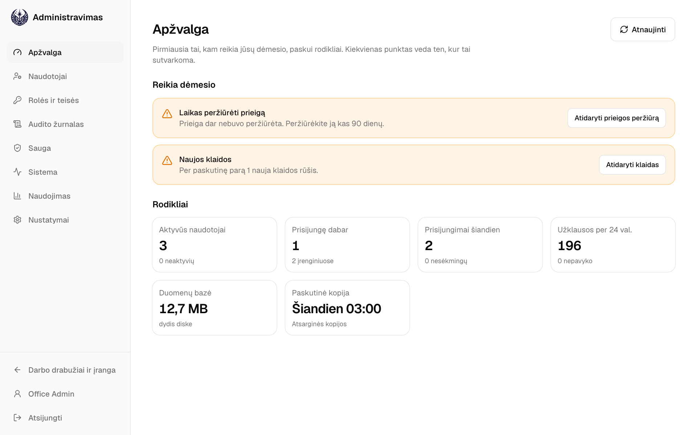
13Naudotojai
Tik administratoriams
- Kurkite, redaguokite ar deaktyvuokite paskyras. Kiekvienai paskyrai priskirkite vieną ar kelias roles: naudotojas gali tai, ką leidžia bet kuri jo rolė. Ką leidžia kiekviena rolė, rodo Rolės ir teisės.
- Rolės pakeitimas naudotoją pasiekia per kelias minutes, nereikia jungtis iš naujo. Deaktyvuotas naudotojas atjungiamas visuose įrenginiuose.
- Slaptažodžiui atkurti naudokite ⋯ → Nustatyti naują slaptažodį….
- Negalite deaktyvuoti savo paskyros ar atimti iš savęs rolės, kuri leidžia tvarkyti naudotojus ar roles. Rolę Administratorius visada turi bent vienas aktyvus naudotojas.
- Jei prisijungėte daugiau nei prieš 12 valandų, prieš išsaugant pakeitimą programėlė paprašys patvirtinti slaptažodį (Patvirtinkite slaptažodį).
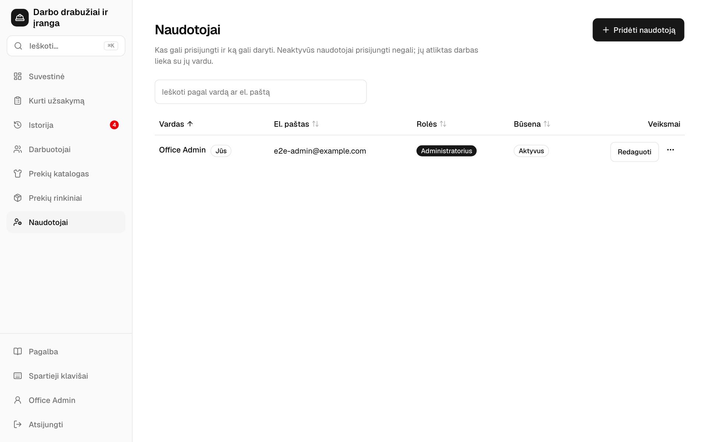
14Rolės ir teisės
Tik administratoriams
Rolės ir teisės rodo kiekvieną rolę, ką ji leidžia ir kiek naudotojų ją turi. Rolė – tai teisių rinkinys, pavyzdžiui, Tvarkyti prekių katalogą ar Trinti darbuotojus. Roles naudotojams skiriate skiltyje Naudotojai.
- Administratorius, Vadovas ir Darbuotojas yra įtaisytos rolės. Administratorius gali viską ir jo pakeisti negalima: Peržiūrėti parodo, ką jis leidžia. Ką leidžia Vadovas ir Darbuotojas, galite keisti, bet ne jų pavadinimus ar aprašymus, o ištrinti jų negalima.
- Pridėti rolę sukuria naują: pavadinimas, kam ji skirta, ir jos teisės. Kai kurioms teisėms reikia kitos, kuri pažymima kartu: teisei Tvarkyti naudotojus reikia teisės Matyti naudotojus.
- Pakeitimas rolę turinčius naudotojus pasiekia per kelias minutes.
- ⋯ → Ištrinti rolę… ištrina rolę, kurios neturi nė vienas naudotojas. Pirmiausia atimkite ją iš naudotojų skiltyje Naudotojai.
- Jei prisijungėte daugiau nei prieš 12 valandų, prieš išsaugant pakeitimą programėlė paprašys patvirtinti slaptažodį (Patvirtinkite slaptažodį).
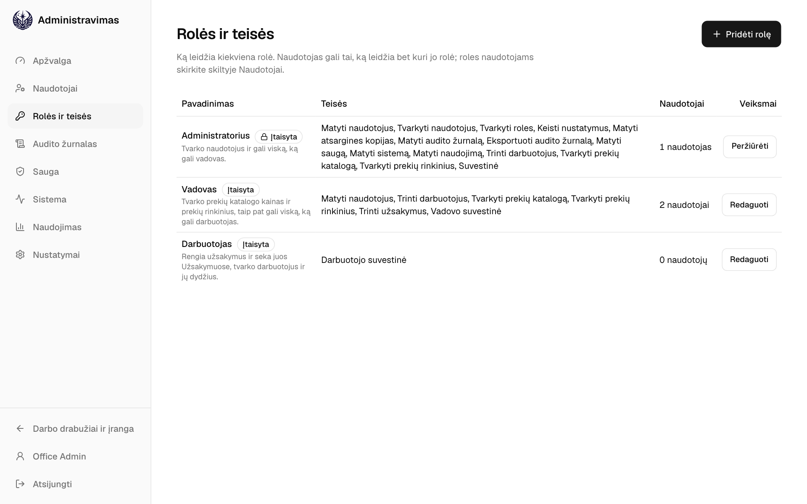
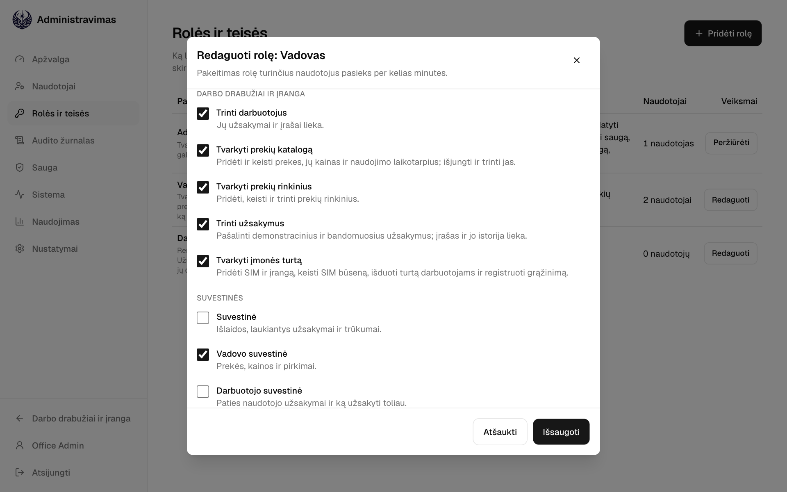
15Audito žurnalas
Tik administratoriams
Audito žurnalas rodo kiekvieną užfiksuotą pakeitimą: kas pakeista, kas pakeitė, kada ir kur. Pakeitimas daromas programoje Darbo drabužiai ir įranga, Administravime, per darbuotojo Patvirtinimo nuorodą arba pačios Sistemos.
Filtruokite pagal Sritis, Pakeitimas, Naudotojas ir datas. Spustelėkite pakeitimą, kad jis atsivertų šalia sąrašo. Jame matyti kiekvienas laukas prieš ir po, o Atidaryti programoje „Darbo drabužiai ir įranga“ atidaro įrašą. Visi šio įrašo pakeitimai susiaurina sąrašą iki jo.
- Antspaudai, viršuje: kiekvienos dienos pakeitimai užantspauduojami praėjus valandai po dienos pabaigos maiša, kuri apima ir ankstesnę dieną, todėl vėliau pakeistas, pridėtas ar pašalintas pakeitimas išryškėja. Patikrinti iš naujo patikrina visus antspaudus; programėlė juos tikrina ir kas valandą.
- Kiekvienam antspaudui suteikiama ir laiko žyma: viešoji laiko žymų tarnyba pasirašo antspaudą kartu su laiku. Vėliau iš naujo sudarytas antspaudas negali gauti pradinio laiko, todėl net turintis prieigą prie serverio negali nepastebimai perrašyti žurnalo. Skydelis rodo, iki kurios dienos antspaudams suteiktos laiko žymos.
- Jei užantspauduota diena nesutampa arba jos laiko žyma netinkama, pavėluota ar jos nėra, tai parodo Apžvalga. Praneškite serverį prižiūrinčiam asmeniui ir išsaugokite atsargines kopijas iš laiko prieš tą dieną.
- Eksportuoti atsisiunčia filtrų atrinktus pakeitimus tarp dviejų dienų, ne ilgiau kaip per metus, kaip CSV, skaičiuoklei arba JSON eilutės, archyvui. Pats eksportas taip pat užfiksuojamas audito žurnale.
- Pakeitimai laikomi metų metus (10 metų, jei serveryje nenustatyta kitaip), paskui ištrinami po dieną.
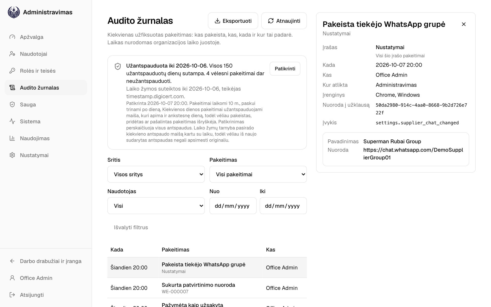
16Sauga
Tik administratoriams
Sauga turi tris skirtukus:
- Prisijungimai: kiekvienas prisijungimas, nepavykęs bandymas, patvirtintas slaptažodis ir atsijungimas su paskyra, adresu, iš kurio jungtasi, ir įrenginiu. Filtruokite pagal įvykį, naudotoją ir datas. Prie nepavykusio bandymo nurodyta priežastis, pvz., Neteisingas slaptažodis. Prisijungimų įrašai laikomi 180 dienų.
- Prisijungę įrenginiai: kiekviena naršyklė, kurioje kas nors šiuo metu prisijungęs. Mygtuku Atjungti atjunkite pamestą ar neatpažintą įrenginį: tas asmuo ten turės vėl prisijungti savo slaptažodžiu.
- Prieigos peržiūra: kiekvienas naudotojas su rolėmis, tuo, ką jos leidžia, ir paskutiniu prisijungimu. Administratoriai ir paskyros, nenaudotos 90 dienų, pažymėti. Patikrinkite, ar kiekvienam vis dar reikia jo prieigos, pakeiskite ją ekrane Naudotojai, tada pasirinkite Pažymėti kaip peržiūrėtą. Darykite tai kas 90 dienų: Apžvalga primins.
Nukopijuotas prisijungimas sustabdytas reiškia, kad kažkas panaudojo seną prisijungimo kopiją, todėl jis buvo nutrauktas visuose jį turėjusiuose įrenginiuose. Paklauskite naudotojo, ar tai buvo jis. Jei ne, tegul pasikeičia slaptažodį.
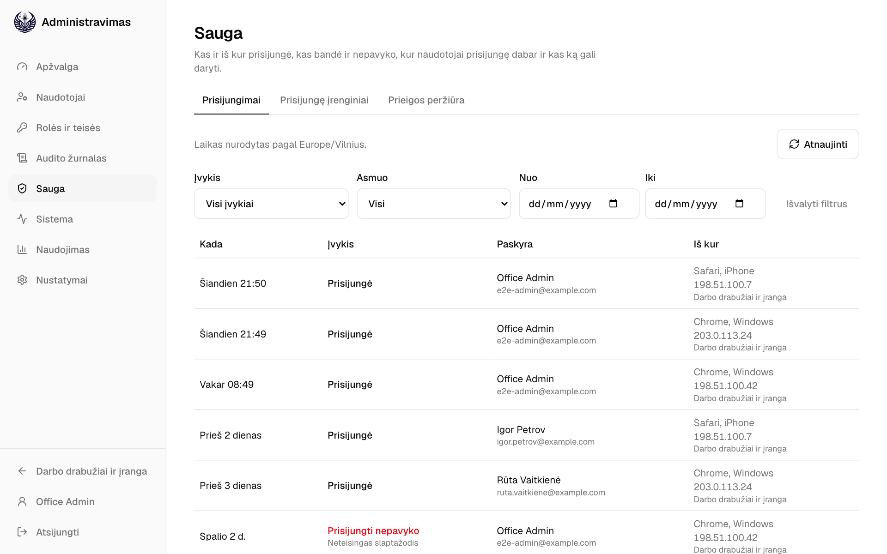
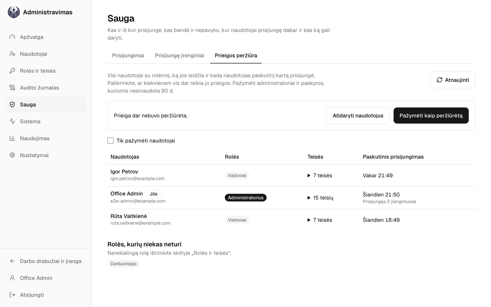
17Sistema
Tik administratoriams
Sistema rodo, kaip veikia programėlė. Ji turi tris skirtukus: Būsena, Klaidos ir Atsarginės kopijos.
- Būsena: ar programėlė Veikia, jos versija ir kada ji paleista; paskutinių 24 valandų užklausos, kiek jų nepavyko ir kiek jos truko; duomenų bazės dydis ir paskutinė migracija; kiek laikomi prisijungimai, klaidos ir pakeitimai.
- Klaidos: kas nepavyko serveryje ar kieno nors naršyklėje, kiek kartų ir kada paskutinį kartą. Atidarykite klaidą, kad matytumėte, kas su ja susidūrė, kur ir kokiu įrenginiu. Klaidos laikomos 30 dienų.
- Atsarginės kopijos: žr. toliau.
Kai kas nors nepavyksta, programėlė parodo Nuoroda į užklausą, pvz., 9f2c1a7e. Klaida ekrane Klaidos rodo tą pačią nuorodą. Perduokite ją serverį prižiūrinčiam asmeniui: pagal ją jis randa klaidą serverio žurnale.
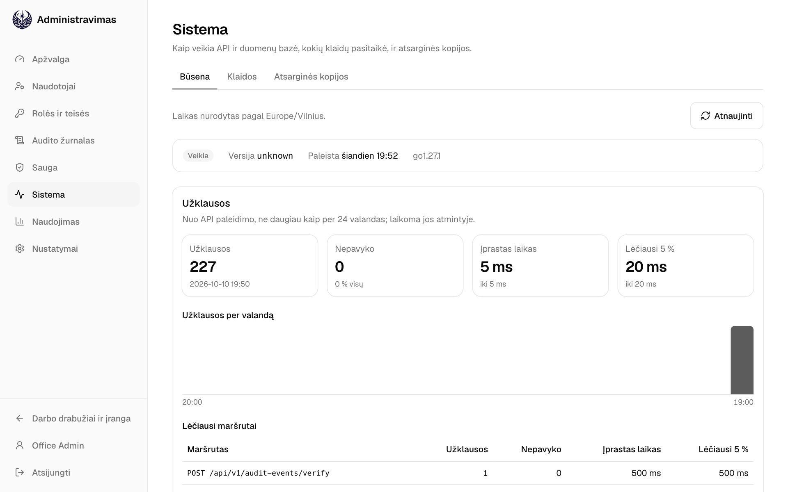
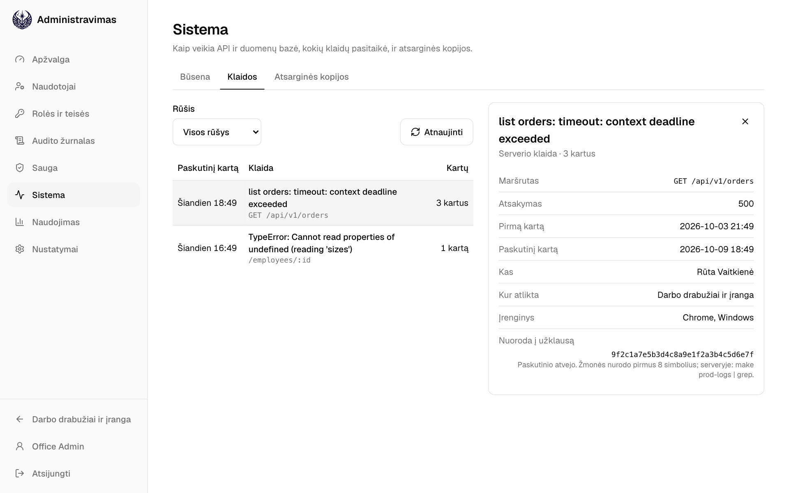
18Atsarginės kopijos
Tik administratoriams
Sistema → Atsarginės kopijos rodo, ar duomenų bazė kopijuojama. Atsarginių kopijų tarnyba serveryje pagal tvarkaraštį kopijuoja visą duomenų bazę, jei nenustatyta kitaip, kiekvieną naktį, ir ištrina senas kopijas pasibaigus laikymo laikui.
Viršutinė eilutė sako, ar viskas gerai. Ji tampa raudona, kai paskutinė kopija nepavyko, kai suplanuota kopija vėluoja arba kai tarnyba nustojo pranešti. Praneškite serverį prižiūrinčiam žmogui.
Antras įspėjimas rodomas, kol kopijos laikomos tik pačiame serveryje, nes jos dingtų kartu su juo.
- Paskutinė kopija ir Kita kopija: kada, paskutinės dydis ir kiek ji užtruko.
- Laikoma ir Bendras dydis: dabar laikomos kopijos.
- Naujausios kopijos: kiekvienas bandymas, naujausi pirmi, nepavykusio – su klaida.
- Nustatymai: tvarkaraštis, kur kopijos saugomos, kiek laiko laikomos ir ar užšifruotos.
Nustatymai keičiami serveryje, ten ir atkuriama kopija: programėlė juos tik rodo.
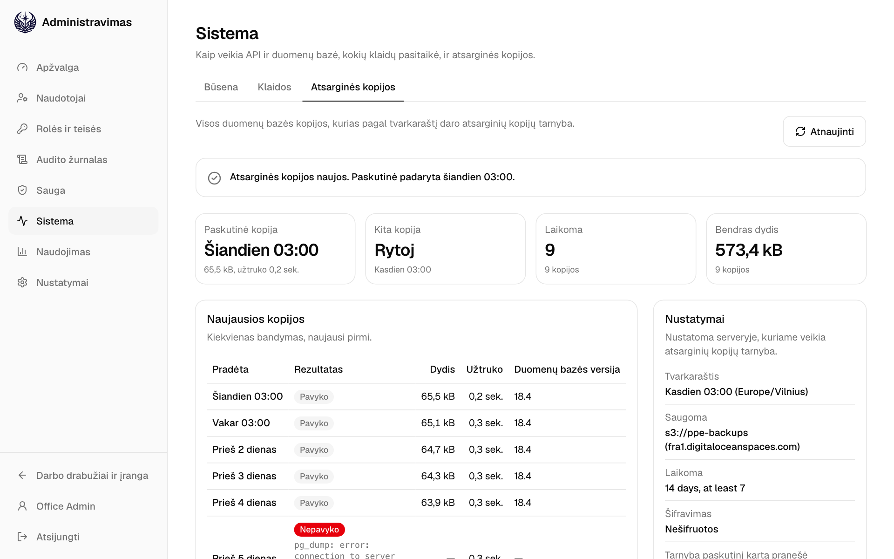
19Naudojimas
Tik administratoriams
Naudojimas rodo, kaip naudojamasi programėlėmis. Jokie puslapiai nesekami: viskas gaunama iš to, ką programėlė ir taip užfiksuoja.
- Viršuje: šiandien, per paskutines 7 ir per 30 dienų aktyvūs asmenys iš visų aktyvių paskyrų ir šiandienos prisijungimai.
- Aktyvūs asmenys per dieną pagal programėlę, su linija kiekvienai rolei. Prisijungimai per dieną, su nepavykusiais.
- Patvirtinimo nuorodos per 90 dienų: kiek nuorodų darbuotojams išsiųsta, atidaryta ir patvirtinta, kiek dar laukia, nebegalioja ar buvo pakeistos.
- Pakeitimai per savaitę pagal sritį (kuo tamsiau, tuo daugiau) ir daugiausia pakeitimų atlikę asmenys.
- Įrenginiai per 30 dienų ir Kalbos: telefonai, planšetės ir kompiuteriai su jų sistemomis ir naršyklėmis, naudotojų ir darbuotojų kalbos.
- Duomenų kokybė per 90 dienų: darbuotojai be dydžių ir prekės be kainos ar naudojimo laikotarpio. Kuo mažiau, tuo geriau.
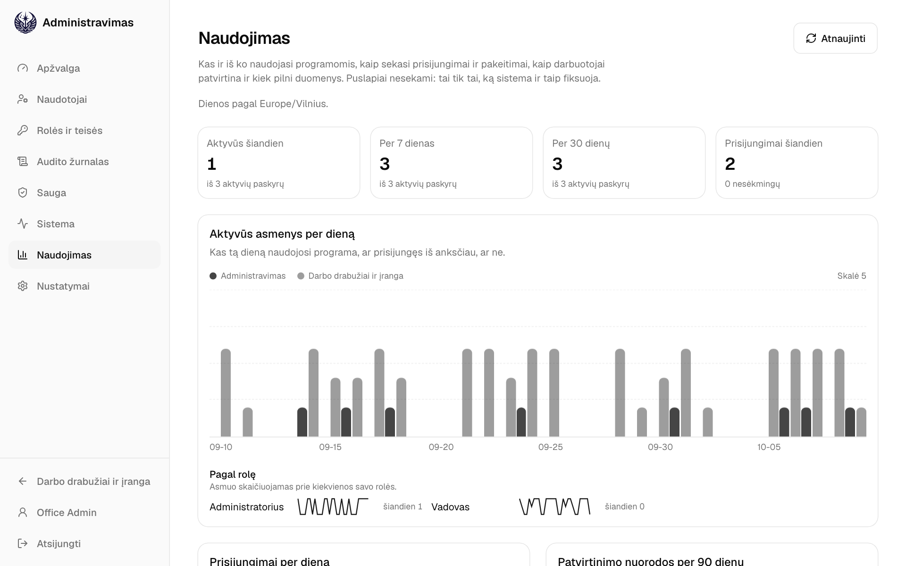
20Nustatymai
Tik administratoriams
Tiekėjo WhatsApp grupė: įrašykite grupės pavadinimą ir pakvietimo nuorodą. WhatsApp programėlėje atidarykite grupę, palieskite jos pavadinimą, tada Pakviesti per nuorodą ir Kopijuoti nuorodą.
Kopijuoti į WhatsApp tada pasiūlo atidaryti šią grupę, kur įklijuojate užsakymo žinutę. WhatsApp negali atidaryti grupės su jau įrašyta žinute. Pašalinti grupę grąžina WhatsApp atidarymą nepasirinkus pokalbio.
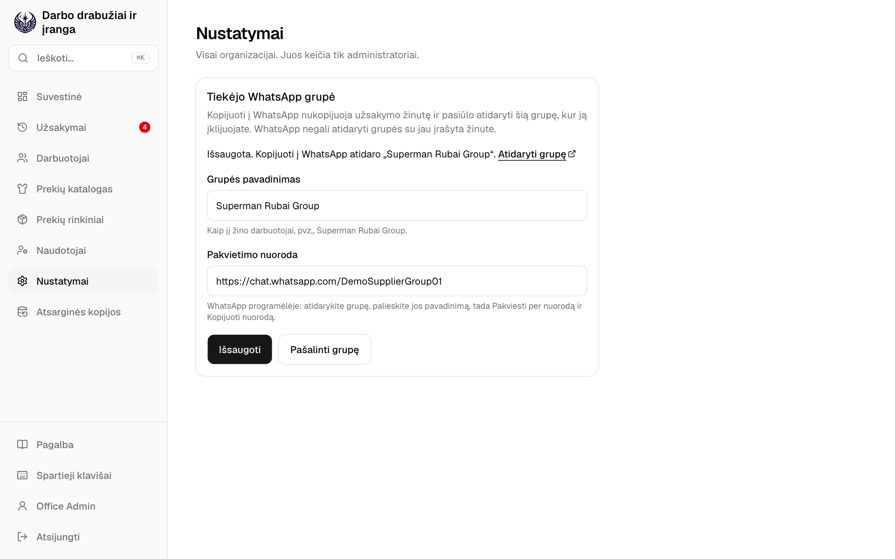
21Jūsų paskyra
- Kalba: English, Lietuvių arba Русский. Pasirinkimas išsaugomas jūsų paskyroje, todėl galioja kiekviename įrenginyje, kuriame prisijungiate. Darbuotojo patvirtinimo puslapis ir įrašas lieka anglų ir rusų kalbomis.
- Tema: Šviesi, Tamsi arba Kaip įrenginyje. Ji išsaugoma šiame įrenginyje ir galioja ir prisijungimo puslapyje.
- Keisti slaptažodį: kiti jūsų įrenginiai atjungiami, o šis lieka prisijungęs.
- Prisijungę įrenginiai: visos naršyklės, kuriose esate prisijungę, ir kada jos naudotos paskutinį kartą. Šis įrenginys – pirmas. Atjunkite įrenginį, kurio nebenaudojate ar neatpažįstate, arba pasirinkite Atjungti visus kitus įrenginius.
- Lentelės eilutės: Kompaktiškos ekrane sutalpina daugiau eilučių.
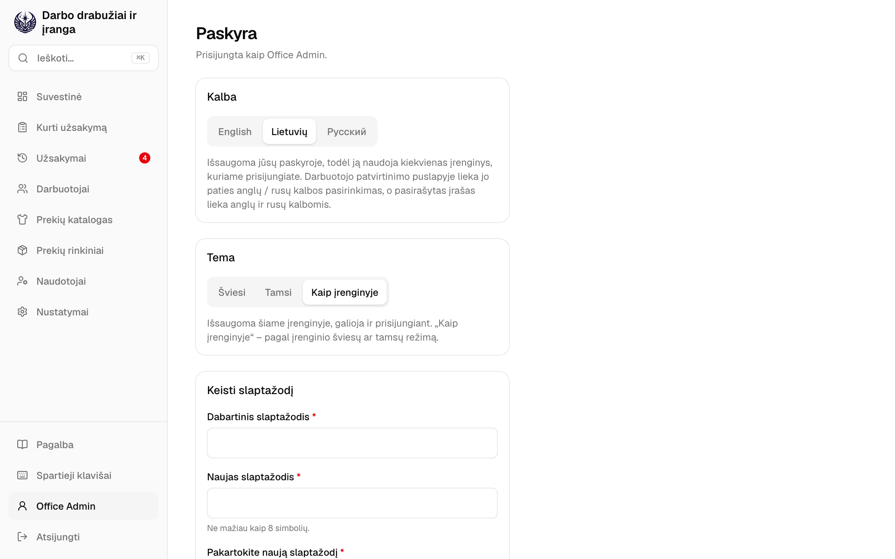
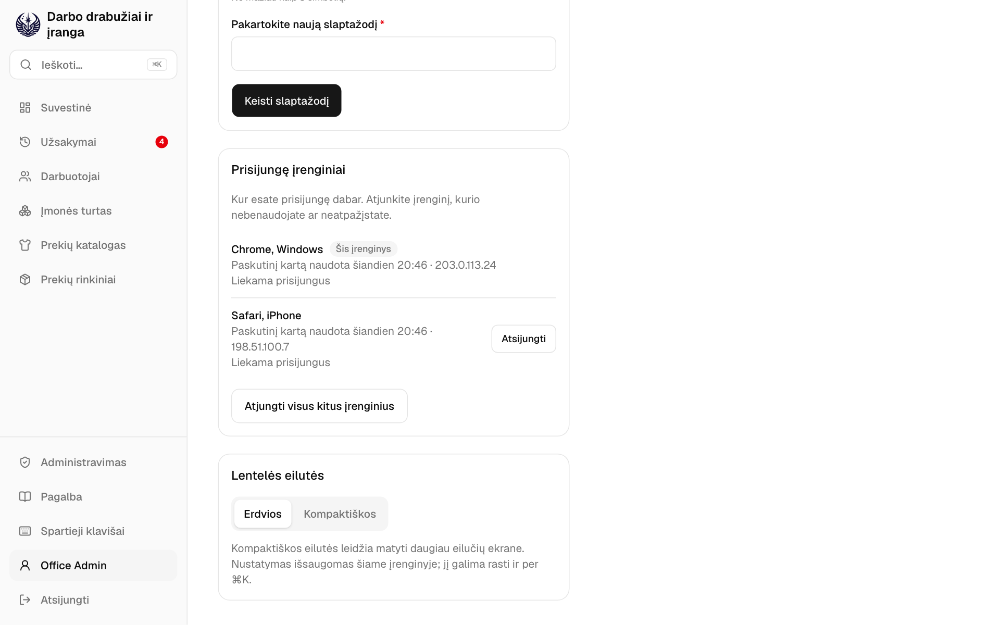
22Paieška ir spartieji klavišai
| Klavišas | Ką daro |
|---|---|
| ⌘K / Ctrl K | Ieško įrašų numerių, darbuotojų, prekių, įmonės turto ir ekranų. Pavyzdžiui, įveskite vardą ir pasirinkite Naujas užsakymas: …. |
| / | Pereina į paieškos arba „Pridėti prekę“ lauką. |
| G, tada D O H E A C S U | Pereina į Suvestinę, Kurti užsakymą, Užsakymus, Darbuotojus, Įmonės turtą, Katalogą, Prekių rinkinius arba Naudotojus (Administravime). |
| J / K, Esc | Pereina per Užsakymus arba uždaro atidarytą užsakymą. |
| ⌘/Ctrl Enter | Ekrane „Kurti užsakymą“ atidaro užsakymo peržiūrą. |
| ? | Rodo visus sparčiuosius klavišus. |
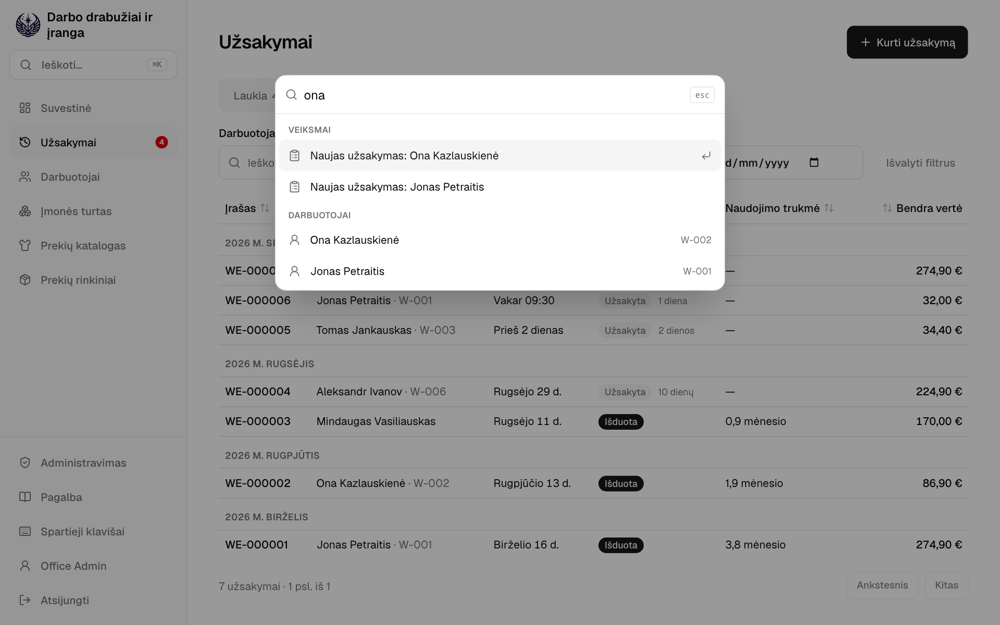